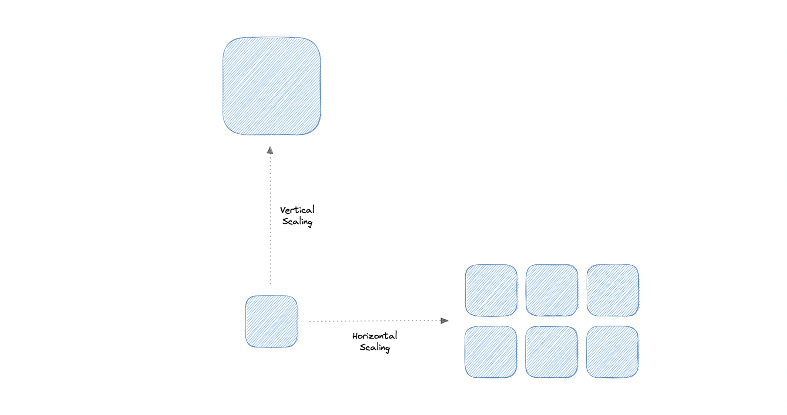

Availability, Scalability & Storage
Ba thuộc tính phi chức năng (non-functional) cốt lõi: hệ thống "sống" được bao lâu (availability), mở rộng thế nào (scalability), và lưu dữ liệu ra sao (storage).
Availability (Tính sẵn sàng)
Là phần trăm thời gian hệ thống hoạt động bình thường. Công thức:
"Số 9" của availability
| Availability | Downtime / năm | Downtime / tháng |
|---|---|---|
| 90% (một số 9) | 36.53 ngày | 72 giờ |
| 99% (hai số 9) | 3.65 ngày | 7.20 giờ |
| 99.9% (ba số 9) | 8.77 giờ | 43.8 phút |
| 99.99% (bốn số 9) | 52.6 phút | 4.32 phút |
| 99.999% (năm số 9) | 5.25 phút | 25.9 giây |
Availability nối tiếp vs song song
Hệ thống reliable thì luôn available, nhưng available chưa chắc reliable. Fault-tolerant: không gián đoạn dịch vụ (đòi dư thừa phần cứng toàn phần, rất đắt). High availability: gián đoạn tối thiểu (rẻ hơn).
Scalability (Khả năng mở rộng)
Là mức độ hệ thống phản ứng tốt khi thêm/bớt tài nguyên để đáp ứng nhu cầu.

| Vertical Scaling (scale up) | Horizontal Scaling (scale out) | |
|---|---|---|
| Cách làm | Tăng sức mạnh cho một máy (CPU/RAM). | Thêm nhiều máy vào pool. |
| Ưu điểm | Đơn giản, dễ quản lý, dữ liệu nhất quán. | Tăng redundancy, chịu lỗi tốt, linh hoạt, dễ nâng cấp. |
| Nhược điểm | Rủi ro downtime cao, khó nâng cấp, là SPOF. | Phức tạp hơn, dễ bất nhất dữ liệu, tăng tải downstream. |
Scale up = mua máy khỏe hơn (có giới hạn vật lý). Scale out = mua thêm máy (gần như không giới hạn nhưng phức tạp). Hệ thống lớn gần như luôn cần scale out.
Storage (Lưu trữ)
RAID (Redundant Array of Independent Disks)
Lưu cùng dữ liệu trên nhiều ổ để chống hỏng ổ:
| RAID | Mô tả | Min ổ | Chịu lỗi |
|---|---|---|---|
| RAID 0 | Striping (chia đều) | 2 | Không |
| RAID 1 | Mirroring (nhân bản) | 2 | 1 ổ |
| RAID 5 | Striping + parity | 3 | 1 ổ |
| RAID 6 | Striping + double parity | 4 | 2 ổ |
| RAID 10 | Striping + Mirroring | 4 | 1 ổ mỗi nhóm |
Các loại storage
| Loại | Lưu thế nào | Ví dụ |
|---|---|---|
| File storage | Dạng file trong cây thư mục phân cấp; thân thiện, cần đường dẫn đầy đủ. | Amazon EFS, Azure Files |
| Block storage | Chia dữ liệu thành các block có ID, đặt linh hoạt; tách dữ liệu khỏi môi trường người dùng. | Amazon EBS |
| Object storage | Chia file thành object, lưu trong một kho duy nhất trải trên nhiều hệ thống mạng. | Amazon S3, Azure Blob, GCS |
NAS (Network Attached Storage): thiết bị lưu trữ gắn vào mạng cho phép truy xuất tập trung. HDFS (Hadoop Distributed File System): hệ thống file phân tán chạy trên phần cứng phổ thông, chịu lỗi cao, lưu file lớn thành chuỗi block được replicate.
Availability đo bằng "số 9" (99.9% = ~8.7h downtime/năm); nối tiếp làm giảm, song song làm tăng. Scale up = máy khỏe hơn, scale out = nhiều máy hơn (ưu tiên cho hệ lớn). Storage: RAID chống hỏng ổ; file/block/object cho mục đích khác nhau (object storage cho media/cloud).